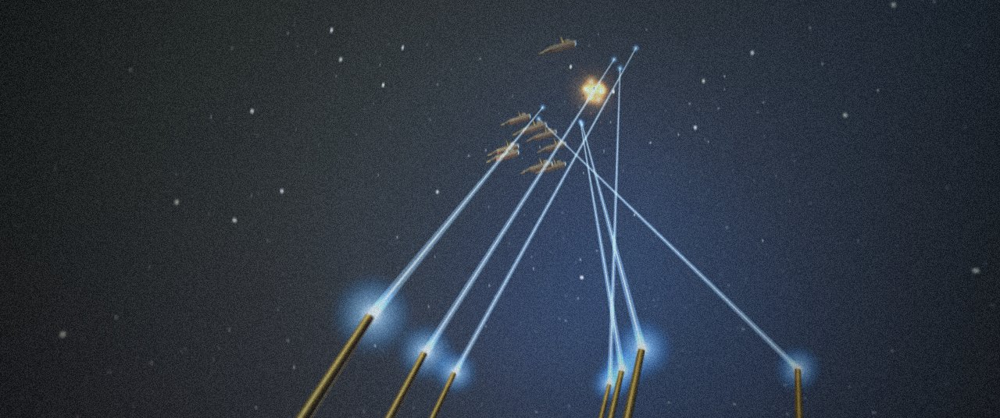

Studie · der Imperiale Herold als Komponente des konfigurierbaren Dashboards von Interface v3 (#236) · eigene Seite und Komponente [E, 2026-11-23] · Breiten, Inhalte, Texte und Zahlen sind Vorschläge [V] · die Komponente zeigt nur, was der Herold öffentlich zeigt
Breite 1 · neben anderen Komponenten
- SCHLACHT312 Kathedralschiffe über Gorgonis III gefallen ▶ vor ca. 6 Std. · Replay
- FORSCHUNGErstes Imperium erreicht Warp-Antrieb 12 vor ca. 11 Std.
- DEMENTIBelagerung von Vharos war falsch vor ca. 18 Std.
-
HRDer Herold berichtet über deine Schlacht
Gorgonis III · Chronisten-Stufe 4 · deine Flotte wird genannt -
FSForschung abgeschlossen
Scholarium Stufe 6
Breite 2 · Schlacht des Tages und Meldungen

▶ Kathedralschiffe brennen über Gorgonis III
Replay 2:40 · vor ca. 6 Std.
Replay 2:40 · vor ca. 6 Std.
- SCHLACHTAbfangjäger zerreißen Frachtkonvoi bei [2:118:4] vor ca. 9 Std.
- FORSCHUNGErstes Imperium erreicht Warp-Antrieb 12 vor ca. 11 Std. · Name geheim
- IMPERIUMNeuer Mond über [3:401:9] vor ca. 14 Std.
- UNBESTÄTIGT„Mehrere Hundert“ Fregatten in Galaxie 1 vor ca. 20 Std.
-
SGChronisten werden genauer
In 2 Tagen Stufe 4; dein Schweigegelübde: 2
Breite 3 · kleiner Herold im Dashboard

▶ Gorgonis III: Die Verteidigung schlägt zurück
Replay 2:40 · Runde 5 von 6 · vor ca. 6 Std.
Replay 2:40 · Runde 5 von 6 · vor ca. 6 Std.
- SCHLACHT312 Kathedralschiffe über Gorgonis III vor ca. 6 Std. · Replay
- FORSCHUNGWarp-Antrieb 12 erreicht vor ca. 11 Std.
- BÖRSE1,2 Mio. Promethium gehandelt vor ca. 16 Std.
- DEMENTIVharos: Meldung war falsch vor ca. 18 Std.
| Kurs | je 1 | 24 Std. |
|---|---|---|
| Psikristall | 1,92 | +3,1 % |
| Promethium | 4,35 | −1,4 % |
| Prom./Psik. | 2,27 | −4,6 % |
Kurse nur, wenn die Börse (#386) in dieser Runde offen ist.
Handy und Einstellungen
▶ Gorgonis III · Replay 2:40
- FORSCHUNGWarp-Antrieb 12 erreicht vor ca. 11 Std.
- DEMENTIVharos: Meldung war falsch vor ca. 18 Std.
Auf dem Handy öffnet das Replay eine leichtere Fassung oder nur das Storyboard (offen, #382 B5).
Einstellungen: Imperialer Herold
Breite im Raster:
1 Spalte2 Spalten3 Spalten
Zeigen:
Standbildstumm abspielenaus
Regeln der Komponente [V]
- Breiten 1, 2, 3; jede hat ihr eigenes Layout (Liste, Replay + Liste, kleiner Herold), nicht nur gestreckt (#236).
- Liest dieselben Meldungen wie die Seite: gleiche Verzögerung, Unschärfe und Falschmeldungen. Kein Vorteil für Dashboard-Nutzer.
- „Herold öffnen“ führt zur eigenen Seite [E]; ein Klick auf ein Replay öffnet es dort.
- Beiträge an „Was in deiner Abwesenheit geschah“: wenn der Herold über das eigene Imperium berichtet hat.
- Beitrag an „Nächste Schritte“: wenn die Chronisten-Stufe bald über das eigene Schweigegelübde steigt; der Knopf öffnet nur die Forschung, er forscht nicht.
- Ist der Herold in der Runde aus, steht die Komponente als „in dieser Runde nicht verfügbar“ da; das gespeicherte Set bleibt unverändert.
- Modern und Classic zeigen dieselben Inhalte.